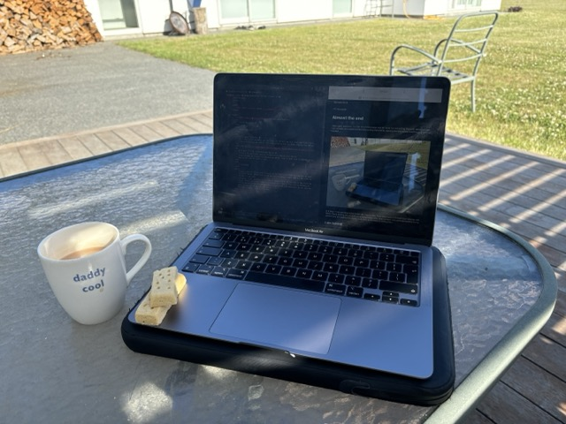

7th December
Hello again everyone. It is the 7th of December and for once I'm not writing this post retrospectively. I am actually sat outside at this table writing this article, sipping tea and eating shortbread (thank you Auntie!)
In 6 days I'll be returning home to the UK. I have a few more days here in Christchurch staying with family. Along lending me a bunch of camping equipment, they've been very accommodation to my plans (if you are reading this thank you!). Now at the time of writing this...
I have a planned 34 articles to write of my travels and wish to complete as soon as possible. It's also become quite clear to me how many mistakes I have made in the existing posts so some time to review again my older work would not go amiss. So, here's the plan. The (self imposed) deadline to complete all my traveling related articles is the 2nd of January (or by the end of New Years Day). It was always ambitious thinking I'd write every day on this little MacBook Air while on the road, but I didn't wish to fall this far behind. With a desire to have a complete log of what I did (and hopefully to the interest of anyone else reading this) I'm setting this target and am hopeful I'll meet it.
Hope you are all doing well out there. This Pom's nearly ready to fly home.
Navigate home